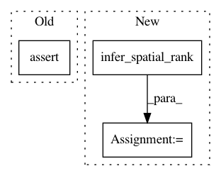

fc84b744240b6d8e90ba725ae0819af585badafc,layer/downsample.py,DownSampleLayer,layer_op,#DownSampleLayer#Any#,28
Before Change
def layer_op(self, input_tensor):
spatial_rank = input_tensor.get_shape().ndims - 2
assert(spatial_rank > 0)
output_tensor = tf.nn.pool(
input=input_tensor,
window_shape=[self.kernel_size] * spatial_rank,
pooling_type=self.func,
After Change
super(DownSampleLayer, self).__init__(name=self.layer_name)
def layer_op(self, input_tensor):
spatial_rank = layer_util.infer_spatial_rank(input_tensor)
output_tensor = tf.nn.pool(
input=input_tensor,
window_shape=[self.kernel_size] * spatial_rank,
pooling_type=self.func,
In pattern: SUPERPATTERN
Frequency: 4
Non-data size: 3
Instances
Project Name: NifTK/NiftyNet
Commit Name: fc84b744240b6d8e90ba725ae0819af585badafc
Time: 2017-05-08
Author: wenqi.li@ucl.ac.uk
File Name: layer/downsample.py
Class Name: DownSampleLayer
Method Name: layer_op
Project Name: NifTK/NiftyNet
Commit Name: fc84b744240b6d8e90ba725ae0819af585badafc
Time: 2017-05-08
Author: wenqi.li@ucl.ac.uk
File Name: layer/convolution.py
Class Name: ConvLayer
Method Name: layer_op
Project Name: NifTK/NiftyNet
Commit Name: fc84b744240b6d8e90ba725ae0819af585badafc
Time: 2017-05-08
Author: wenqi.li@ucl.ac.uk
File Name: layer/deconvolution.py
Class Name: DeconvLayer
Method Name: layer_op
Project Name: NifTK/NiftyNet
Commit Name: fc84b744240b6d8e90ba725ae0819af585badafc
Time: 2017-05-08
Author: wenqi.li@ucl.ac.uk
File Name: layer/upsample.py
Class Name: UpSampleLayer
Method Name: layer_op